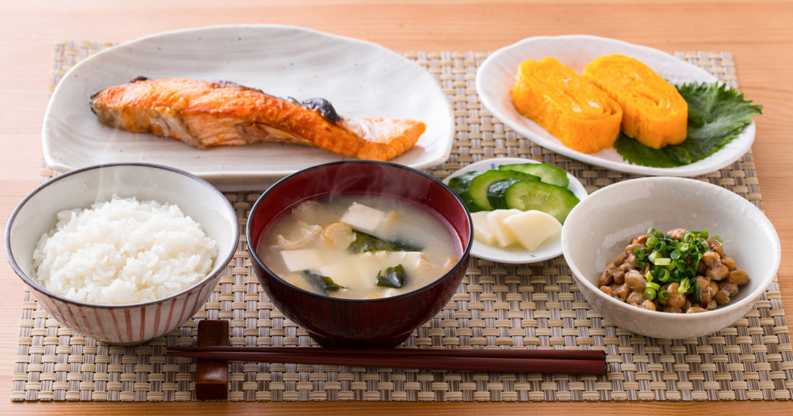

Kesuke
Honda
プロデューサー
本田 圭佑
世界に羽ばたき、世界に認められるエースのような存在となるプロデュースしている本田圭佑の想いが 「World Ace Honda Soltilo」WAHSの理念となっています。
soltilochibaは世界に羽ばたくエースを育てるというモットーで本田圭佑選手によってプロデュースされたサッカーチームです。 誰にも負けないという強い気持ちを持った選手を育てています。

SoltiloChibaは専用の天然芝のグラウンドで練習できる絶好の練習環境が整っています。 105m×68mをフルコートで使った、本番と同じ環境での練習や、コートを半分に分けて少年用コート2面として練習するなど様々な練習ができます。
Kesuke
Honda
プロデューサー
本田 圭佑
世界に羽ばたき、世界に認められるエースのような存在となるプロデュースしている本田圭佑の想いが 「World Ace Honda Soltilo」WAHSの理念となっています。
Yuji
Hashimoto
監督
橋本 雄二
スポーツマンシップを忘れずに、それでも相手選手はもちろんライバルや仲間にも負けないという競争心を持って、 お互いに高めあっていく関係を作ってほしい。
Jin
Asano
コーチ
浅野 仁
サッカーがうまくなるだけではなく、人として成長してほしい。大学生になって、 大人になったときに立派になったなと自信をもって送り出せる選手に思えるようになってほしい。
Tsubasa
Aoki
流通経済大学
青木 翼
この３年間が人生において大きな変化をもたらした３年間でした。２年生の時に、 橋本監督に出会い沢山の事を教えていただきました。SOLTILO CHIBA FCはサッカーだけでなく 人間的に大きく成長できる場所です。本気でサッカー選手を目指しているならSOLTILOCHIBAに入る事をオススメします。 ぜひ自分の手で夢を掴んでください!
Yuma
Moriyama
流通経済大学
森山 悠真

強いチームではなくても人間性を高めプロという夢に近づける ということに気付かされました。自分を成長させるのは、環境ではなく自分自身だということを教えられました。
SoltiloChibaは地方から来た選手も全力でサッカーができるように選手寮を完備しています。 寮では食事での栄養サポートなど選手を側面からサポートしています。また、選手寮にはスタッフが常駐して 選手のメンタルサポートなども行っておりますので、プロになりたい方はSoltiloChibaにお越しください。
6:45
朝食
朝食はご飯とパンがでます。選手の体つくりや健康を意識したメニューが食べられています。
8:30~16:00
学校
学校へは寮から寮生の友達と一緒に登校することが多いです。
17:00
練習開始
毎週月曜から日曜まで火曜日以外は練習しています。試合形式の実践に近い練習をしています。
20:00
帰宅
練習が終わり、帰宅します。寮は練習場から徒歩5分なので、とても近く移動も簡単です。
20:30
夕食
夕食は20時と20時30分に分かれて食べます。一番人気なメニューはカレーライスです。
22:30
就寝
夕食を食べて軽いストレッチや筋トレを行った後、ベッドに入り1日が終わりとなります。
Q.寮へ入ってよかったことは？
A.スタッフの方も寮に住んでいるので、サッカーのことで気になったことや悩んでいることをすぐに質問や相談ができることです
Soltilo Chibaは本気でプロを目指す夢ある選手を募集します。世界で活躍する選手になりたい方は下のボタンからセレクション情報を確認してください。
セレクションはこちら